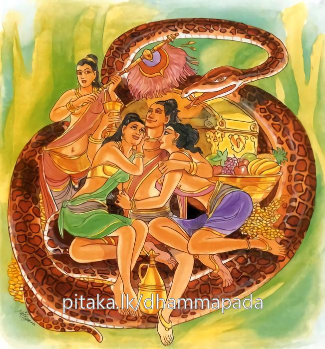
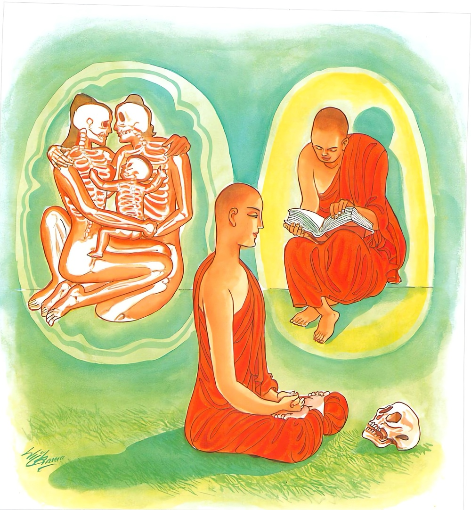

21-3 හද්දිය භික්ෂුන් පිළිබඳ කථා පුවත
මෙම කතාව සද්ධර්ම සාගරයෙන් ද කියවන්න.
යං හි කිච්චං තදපවිද්ධං අකිච්චං පන කයිරති
උන්නලාතං පමත්තානං තෙසං වඩ්ඪන්ති ආසවා.
යමක් මහණුන් විසින් කටයුතු නම් එය (ඒ පාමොක් සිල් රැකුම් ධුතාංග පිරීම් ආදිය) හැරැ පියන ලද්දේ ද, මහණුන් විසින් නො කටයුතු (සිරුර සැරැසීම් ආදි) අකාර්ය්යය වනාහි කරණු ලැබේ ද, (හුවන ලද මාන නල ඇති, ස්මෘතිවිප්රවාසයෙන්) ප්රමාදි වූ ඒ පුඟුලන්ගේ කාමාදි ආස්රවයෝ වැඩෙන්නාහ.

යෙසඤ්ච සුසමාරද්ධා නිච්චං කායගතා සති.
අකිච්චං තෙ න සෙවන්ති කිච්චෙ සාතච්චකාරිනො
සතානං සම්පජානානං අත්ථං ගච්ඡන්ති ආසවා.
යම් කෙනකුන් විසින් කාගියාසී භාවනාව සතතයෙන් මොනොවට වඩන ලද ද, මහණුන් විසින් කටයුතු (සිල් පිරුම් දුහඟ වැඩුම් භාවනායෙහි ඇලීම් යන) කාර්ය්යයෙහි සතතකාරී වූ ඔහු (ශරීරමණ්ඩන පරිෂ්කාර මණ්ඩනාදි) අකාර්ය්යය නො සෙව්නාහ. සිහි ඇති, (චතුසම්පජඤ්ඤ වසයෙන්) සම්පජානකාරී වූ ඒ පුඟුලන්ගේ ආස්රවයෝ පරික්ෂයයට (විනාශයට) යන්නාහ.

"යංහි කිච්චං" - යන මේ ධර්ම දේශනය ශාස්තෲන් වහන්සේ භද්දිය නුවර ඇසුරු කොට ජාතියා වනයේ දී භද්දිය භික්ෂුව නිමිතිකර වදාළ සේක.
ඔවුහු පාපළඳනා - සෙරෙප්පු - සැරසීමේ යෙදුන අය වුහ. එකල්හි භද්දිය භික්ෂුව නොයෙක් ආකාර පාවහන් සැරසීමේ යෙදුනේ වෙති. තෘණ පාවහන් කිරීමද කරවීම ද කරති. මුඤ්ජ පාවහන් - බබුෂ්තණ සෙරෙප්පු - කිතුල් සෙරෙප්පු නෙළුම් සෙරෙප්පු කම්බල සෙරෙප්පු යන මේවා කිරීමද කරවීමද හිස් දෙයෙකැයි උද්දේස විමසා අධි - සීල -අධි චිත්ත - අධි පඤ්ඤා භික්ෂූන් ඔවුන් පිළිබඳව කථා කරන බව දැන ඝෝෂා කර බුදුන්ට දැනුම් දුන්හ. බුදුහු එම භික්ෂුවට ගර්හා කොට මහණෙනි තොප අන් කායකට පැමිණ අනෙක් කටයුත්තක යෙදුනේ යයි පවසා ධර්මය දේශනා කරමින් මේ ගාථාව පැවසුහ.
කළ යුතු දේ නොකොට සිව් සිල් රැකු මාදී
බාහිර දේ කළොත් දෙස් පාලන ආදී
වැඩෙමින් කෙලෙස් තන්හා - රා - මානාදී
අරිමග නිවන් මග ඉන් යනු ඇත සේදී
කළයුතු භාවනා - කරමින් මනා සිල් රැක
එළඹ සිටි සිහි ඇති - මග නැණින් පිරිපුන්වූ
මහණෙකුගේ සිතින් නම් - නැසේ කාමාදි ආසාව
සිල් රැකීම් ආදී තමන් විසින් කටයුතු යම් දෑ මහණෙකු විසින් හැර දමා පිරිකර ඔප මට්ටම් කිරීම් ආදී නො කළ යුතු දෑ කරයිද, උඩඟවූ පමා වූ ඔහුගේ ආශ්රවයෝ වැඩෙත්.
යම් කෙනෙකුන් විසින් කායගතාසති භාවනාව නිතොර මොනවට වඩන ලද ද කටයුත්තෙහි නිත්ය ක්රියා ඇති නොකොට යුතු දෑ නො සෙවිත් මනා සිහි නුවණ ඇති ඔවුන්ගේ ආශ්රමයේ විනාශ වෙත්.
එහි යංහි කිච්චං - යනු භික්ෂූන් විසින් පැවිදිවු තැන්සිට අපමණ සීලක්ඛන්ධ ආරක්ෂා කිරීමයි. ආරණ්යයෙහි විසීම ධුතාංග දැරීම භාවනාවේ යෙදීම මේ ආදී කාර්යයන් මෙහි යම් තමන්ගේ කටයුතු තං අපවිද්ධං විසිකළ අකිච්චන්ති - භික්ෂුගේ - කුඩ සැරසීම - පාවහන් පාත්රය, පටිය, ඉනේ බඳින පටිය, මේවායේ සැරසීම නොකළ යුතු දේත්වෙයි. යම් කෙනෙක් මේවා කරයිද ඔවුන්ගේ මානය වැඩී හැසිරෙන නිසා උන්නලානං - සිහිය බැහැරයයි. පමත්තානං සතර කෙලෙස් වැඩේ යන අර්ථයි. සුසමාරද්ධ මනා පරීක්ෂාවෙන් කායගතා සතිනි - යනු කායානු පස්සනා භාවනාවයි. අකිච්චංති - ඔවුහු කුඩ සැරසීම් ආදිය නොකළ යුතුයි. න සෙවනෙති සේවනය නොකරති. යන අර්ථයි කිච්චෙ නම් පැවිදි වූ තැන්සිට කළයුතු අපරිමාණ ලෙස සිල් රැකීම ගෝපනාදිය කරයි. සාතච්චකාරිනො - නිතර කරන අට්ඨිතකාරී. ඔවුන්ගේ සිහියෙන් නොවිසීමෙන් සතානං සාත්ථක සම්පජඤ්ඤ - සප්පාය සම්පජඤ්ඤ ගෝවර සපජඤ්ඤ අසම්මෝහ සම්පජඤ්ඤ - යන සම්පජඤ්ඤ මේ සතර සම්පජඤ්ඤයෙන් දන්නාවු සමජ්ජානානං සතර කෙලෙස් දුරුවේ. ආසවා අත්ථං ගච්ඡන්ති පරික්ෂිණ අභාවයට යති. යන අර්ථයි.
දේශනය අවසන එම භික්ෂුහු රහත් බැව්හි පිහිටියාහුය. පැමිණි සිටි අයටද දෙසුම සාර්ථක විය.